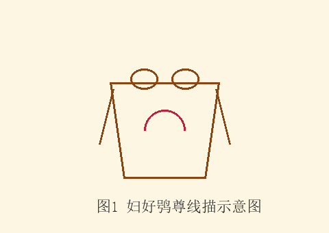

| 项目 | 内容 |
|---|---|
| 器物名称 | 妇好鸮尊 |
| 所属时代 | 商代晚期 |
| 出土地点 | 河南安阳殷墟妇好墓 |
| 现藏地点 | 河南博物院 |
| 尺寸重量 | 通高 45.9 厘米，重 16.7 千克 |
| 铸造年代 | 约公元前 1200 年 |

图1 妇好鸮尊线描示意图：本图为妇好鸮尊的三足圆鼎形线描图，展示双耳、兽面纹与三足造型。
妇好鸮尊整体作站立鸮形，即猫头鹰形。器口微敞，两侧各有一鸟翼形耳。器身满饰花纹，主体纹饰为兽面纹，辅以蝉纹、夔龙纹与云雷纹。器盖为鸮首造型，双目圆睁，喙部尖突，神态威严。
器盖后端铸有铭文"妇好"二字，表明器主为商王武丁之妻妇好。妇好是我国历史上第一位有据可查的女性军事统帅，曾多次率军征伐方国。
妇好鸮尊采用分体铸造法，器身与器盖分别制模、分别浇铸，再组合成器。器物表面纹饰繁缛而层次分明，云雷纹衬底、兽面纹为主题，体现了商代晚期青铜铸造工艺的巅峰水平。
从器壁厚度与铸造痕迹看，该器采用了当时先进的陶范铸造技术，范线处理精细，浇口与冒口打磨平整，反映出殷墟青铜铸造作坊成熟的生产组织能力。
妇好鸮尊出土于 1976 年发掘的殷墟妇好墓。该墓是目前唯一能与甲骨文记载相互印证的商代王室墓葬，出土青铜器四百余件。妇好鸮尊作为其中最具代表性的器物之一，为研究商代礼制、宗教观念与青铜铸造技术提供了珍贵实物资料。